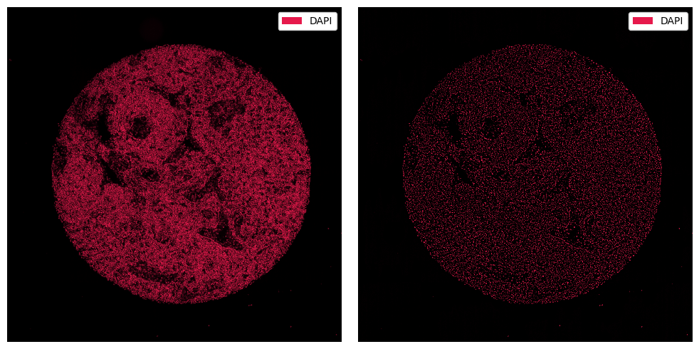
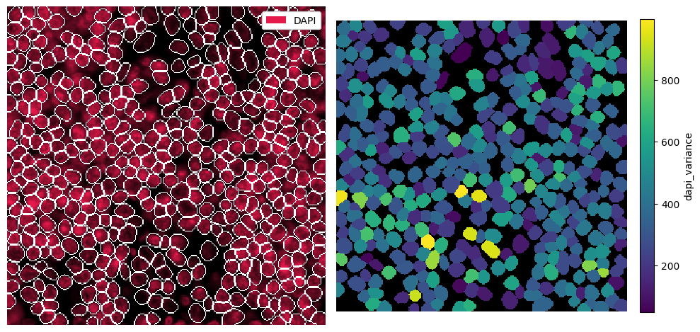
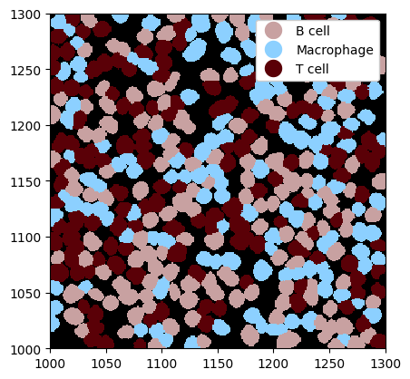
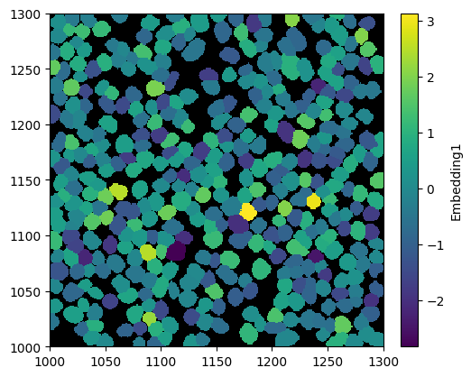
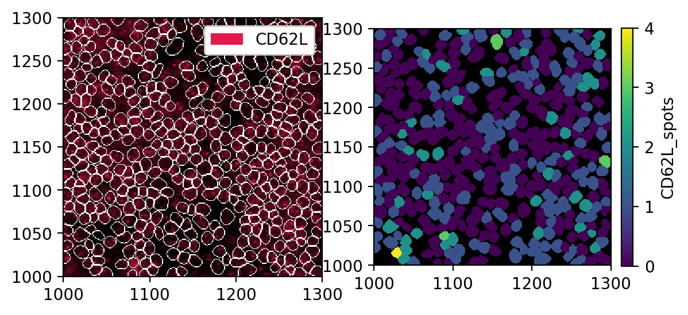

Customizability#
Spatialproteomics provides wrappers around a variety of external tools, such as cellpose or astir. However, as technology progresses, new tools emerge. To accomodate for this, spatialproteomics is fully customizable, meaning that you can for example load your own segmentation masks into the object, load custom cell type annotations, etc.
If you want to follow along with this tutorial, you can download the data here.
[1]:
%reload_ext autoreload
%autoreload 2
import spatialproteomics
import matplotlib.pyplot as plt
import numpy as np
import xarray as xr
import cv2
import pandas as pd
# loading in a data set and only keeping the image
ds = xr.open_zarr("../../data/LN_24_1_unprocessed.zarr").pp.drop_layers(keep="_image")
ds
[1]:
<xarray.Dataset> Size: 504MB
Dimensions: (channels: 56, y: 3000, x: 3000)
Coordinates:
* channels (channels) <U11 2kB 'DAPI' 'Helios' 'CD10' ... 'CD79a' 'Ki-67'
* x (x) int64 24kB 0 1 2 3 4 5 6 ... 2994 2995 2996 2997 2998 2999
* y (y) int64 24kB 0 1 2 3 4 5 6 ... 2994 2995 2996 2997 2998 2999
Data variables:
_image (channels, y, x) uint8 504MB dask.array<chunksize=(7, 375, 750), meta=np.ndarray>Custom Segmentations#
If you have a custom segmentation, you can easily add it to the object using pp.add_segmentation().
[2]:
# dummy array. Instead of this, you could run your own segmentation method here and obtain a numpy array like that
# note that this array should consist of integers, and 0 should mark the background
custom_segmentation = np.zeros((3000, 3000), dtype=int)
custom_segmentation[500:1500, 500:1500] = 1
ds = ds.pp.add_segmentation(custom_segmentation)
ds
[2]:
<xarray.Dataset> Size: 576MB
Dimensions: (channels: 56, y: 3000, x: 3000, cells: 1, features: 2)
Coordinates:
* channels (channels) <U11 2kB 'DAPI' 'Helios' ... 'CD79a' 'Ki-67'
* x (x) int64 24kB 0 1 2 3 4 5 ... 2994 2995 2996 2997 2998 2999
* y (y) int64 24kB 0 1 2 3 4 5 ... 2994 2995 2996 2997 2998 2999
* cells (cells) int64 8B 1
* features (features) <U10 80B 'centroid-0' 'centroid-1'
Data variables:
_image (channels, y, x) uint8 504MB dask.array<chunksize=(7, 375, 750), meta=np.ndarray>
_segmentation (y, x) int64 72MB 0 0 0 0 0 0 0 0 0 0 ... 0 0 0 0 0 0 0 0 0 0
_obs (cells, features) float64 16B 999.5 999.5Note that our object now contains the _segmentation layer. It also computed the centroids of the cells and stored them in _obs.
Custom Image Processing#
To apply custom image processing methods, you can make use of the pp.apply() method, into which you can pass any function that transforms an array. For example, let’s consider one that blurs the image and subtracts it from the original.
[3]:
def simple_background_subtraction(image, kernel_size=51):
# ensure input is numpy array
img = np.array(image)
# convert dtype for OpenCV (expects uint8 or float32)
if img.dtype != np.uint8 and img.dtype != np.float32:
img = cv2.normalize(img, None, 0, 255, cv2.NORM_MINMAX).astype(np.uint8)
# compute background with Gaussian blur
background = cv2.GaussianBlur(img, (kernel_size, kernel_size), 0)
# subtract background
subtracted = cv2.subtract(img, background)
# normalize result
result = cv2.normalize(subtracted, None, 0, 255, cv2.NORM_MINMAX)
return result
ds_processed = ds.pp.apply(func=simple_background_subtraction)
[4]:
fig, ax = plt.subplots(1, 2, figsize=(10, 5))
_ = ds.pp["DAPI"].pl.show(ax=ax[0])
_ = ds_processed.pp["DAPI"].pl.show(ax=ax[1])
for axis in ax:
axis.axis("off")
plt.tight_layout()

Custom Protein Quantification#
Typically, the mean or median intensity of each marker are aggregated per cell to obtain an expression matrix. However, this is also fully customizable. You could for example look at how spatially distributed a marker is within each cell mask. To do this, you can define a custom function that takes a segmentation mask and an image as input.
[5]:
# loading the dataset including a proper cell segmentation
# also subsetting for easier visualization
ds = xr.open_zarr("../../data/LN_24_1_unprocessed.zarr").pp[1000:1300, 1000:1300]
[6]:
# this is a very simple method that looks at the variance of a marker within a cell
def spatial_variance(regionmask, intensity_image):
intensities = intensity_image[regionmask]
return np.var(intensities)
ds = ds.pp.add_quantification(func=spatial_variance)
ds
[6]:
<xarray.Dataset> Size: 6MB
Dimensions: (channels: 56, y: 301, x: 301, cells: 416, features: 2)
Coordinates:
* cells (cells) int64 3kB 4304 4311 4312 4318 ... 7269 7270 7271 7306
* channels (channels) <U11 2kB 'DAPI' 'Helios' ... 'CD79a' 'Ki-67'
* features (features) <U10 80B 'centroid-0' 'centroid-1'
* x (x) int64 2kB 1000 1001 1002 1003 ... 1297 1298 1299 1300
* y (y) int64 2kB 1000 1001 1002 1003 ... 1297 1298 1299 1300
Data variables:
_image (channels, y, x) uint8 5MB dask.array<chunksize=(7, 125, 301), meta=np.ndarray>
_obs (cells, features) float64 7kB dask.array<chunksize=(416, 2), meta=np.ndarray>
_segmentation (y, x) int64 725kB 0 0 0 0 0 0 0 0 0 0 ... 0 0 0 0 0 0 0 0 0
_intensity (cells, channels) float64 186kB 265.9 0.0 ... 7.35 0.2526Note that the computed values are now stored in the _intensity layer. For a quick visualization, we can put them into _obs. We do this by using pp.add_feature().
[7]:
dapi_variance = ds.pp.get_layer_as_df("_intensity")["DAPI"].values
ds = ds.pp.add_feature(feature_name="dapi_variance", feature_values=dapi_variance)
[8]:
# visualization
fig, ax = plt.subplots(1, 2, figsize=(10, 5))
_ = ds.pp["DAPI"].pl.show(render_segmentation=True, ax=ax[0])
_ = ds.pl.render_obs("dapi_variance").pl.imshow(legend_obs=True, ax=ax[1])
for axis in ax:
axis.axis("off")
plt.tight_layout()

Custom Cell Type Prediction#
If you have custom labels per cell, you can easily load them into the spatialproteomics object with the la.add_labels_from_dataframe() method. The input dataframe simply needs a column identifying the cells and one identifying the labels.
[9]:
num_cells = ds.sizes["cells"]
cell_ids = ds["cells"].values
# define some example cell types and randomly assign them
# substitute this with your cell type prediction method of choice
cell_types = ["B cell", "T cell", "Macrophage"]
cell_labels = np.random.choice(cell_types, size=num_cells, replace=True)
label_df = pd.DataFrame({"cell": cell_ids, "label": cell_labels})
label_df.head()
[9]:
| cell | label | |
|---|---|---|
| 0 | 4304 | B cell |
| 1 | 4311 | Macrophage |
| 2 | 4312 | B cell |
| 3 | 4318 | T cell |
| 4 | 4327 | T cell |
[10]:
# adding the labels to the spatialproteomics object
ds = ds.la.add_labels_from_dataframe(label_df)
# visualization
_ = ds.pl.show(render_image=False, render_labels=True)

Custom Cell Features#
Depending on your individual workflow, you might have some additional data for each cell. For example, you could train a graph neural network (GNN) to predict cell embeddings based on their neighborhoods. You can easily load such things into the spatialproteomics object using the pp.add_obs_from_dataframe() function.
[11]:
# Simulated GNN embeddings in the form of a dataframe
df = pd.DataFrame(
{
"Embedding1": np.random.randn(ds.sizes["cells"]),
"Embedding2": np.random.randn(ds.sizes["cells"]),
"Embedding3": np.random.randn(ds.sizes["cells"]),
}
)
df.head()
[11]:
| Embedding1 | Embedding2 | Embedding3 | |
|---|---|---|---|
| 0 | -0.834064 | -0.218655 | 0.412385 |
| 1 | 0.275729 | -1.343602 | -1.060857 |
| 2 | 0.962022 | -1.457948 | -0.463753 |
| 3 | -0.297840 | -0.571965 | -0.329516 |
| 4 | 0.004459 | 0.321857 | -1.582663 |
[12]:
ds = ds.pp.add_obs_from_dataframe(df)
_ = ds.pl.render_obs("Embedding1").pl.imshow(legend_obs=True)

Spot Detection with Spotiflow#
Spatialproteomics provides a wrapper around spotiflow to count the number of spots per cell. By default, only the final number of spots is written to the object, but you can set return_spots=True to have a more in-depth look into the spot predictions. Alternatively, you can work with a spatialdata object directly, which supports storing the points alongside cells, images, and other associated data.
[13]:
# predicting the number of spots using spotiflow
ds = ds.tl.spotiflow(channel="CD62L")
# quick look at the obs. This now contains a column called CD62L_spots
ds.pp.get_layer_as_df("_obs").head()
/g/huber/users/meyerben/notebooks/codex_analysis/2024-03-18_spatialproteomics_package/spatialproteomics/.venv/lib/python3.12/site-packages/tqdm/auto.py:21: TqdmWarning: IProgress not found. Please update jupyter and ipywidgets. See https://ipywidgets.readthedocs.io/en/stable/user_install.html
from .autonotebook import tqdm as notebook_tqdm
/g/huber/users/meyerben/notebooks/codex_analysis/2024-03-18_spatialproteomics_package/spatialproteomics/.venv/lib/python3.12/site-packages/torch/cuda/__init__.py:1112: UserWarning: Can't initialize NVML
raw_cnt = _raw_device_count_nvml()
[13]:
| CD62L_spots | Embedding1 | Embedding2 | Embedding3 | _labels | centroid-0 | centroid-1 | dapi_variance | |
|---|---|---|---|---|---|---|---|---|
| 4304 | 0.0 | -0.834064 | -0.218655 | 0.412385 | B cell | 1000.016216 | 1094.767568 | 265.855670 |
| 4311 | 0.0 | 0.275729 | -1.343602 | -1.060857 | Macrophage | 1002.259036 | 1126.759036 | 567.466987 |
| 4312 | 1.0 | 0.962022 | -1.457948 | -0.463753 | B cell | 1001.149660 | 1256.564626 | 495.403975 |
| 4318 | 0.0 | -0.297840 | -0.571965 | -0.329516 | T cell | 1001.702703 | 1080.144144 | 183.464188 |
| 4327 | 1.0 | 0.004459 | 0.321857 | -1.582663 | T cell | 1002.888889 | 1049.494444 | 451.865198 |
[14]:
fig, ax = plt.subplots(1, 2, dpi=200)
_ = ds.pp["CD62L"].pl.show(render_segmentation=True, ax=ax[0])
_ = ds.pl.render_obs("CD62L_spots").pl.imshow(legend_obs=True, ax=ax[1])
